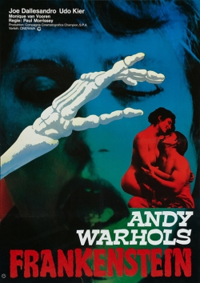

Paul Morrissey
1973
95 minutes
TITLE: Flesh for Frankenstein TEXT PLACEHOLDER 052
This was also released as Andy Warhol's Flesh for Frankenstein. It makes a great double-feature with Andy Warhol's Blood for Dracula, which also stars Udo Kier and Joe Dallesandro. Here, Udo plays Dr Frankenstein and Joe Dallesandro is a randy stud of a farmhand who spouts Marxist philosophy with an unlikely Brooklyn accent and also provides much of the flesh on display.
Yes, as the title suggests, this is a sexy 1970s Frankenstein movie, which sounds bizarre until you remember that it's not even the best-known sexy 1970s Frankenstein movie--which you've seen in the theater multiple times.
The first time you saw the other sexy Frankenstein movie, you were in middle school and had heard rumors about midnight showings of this bizarre film in the cheap second-run theater downtown--the one with a notorious bat infestation. You had heard of the film, which was mentioned in passing in several books you had read regarding underground and counterculture stuff, which was a bit of obsession for you in your early years. You somehow convinced your father that this would be a good use of your time, so the next time he visited he was game for attending a midnight showing of The Rocky Horror Picture Show.
You showed up for the midnight showing and bought your tickets - for only a dollar - along with a cheap bucket of popcorn. You and your father were an odd couple and got some stares from the unusual group of regulars who showed up every week for this event. In retrospect, you're not sure what they thought of a forty-something man showing up with a teenage boy. You're also not sure how clued in your father was that the two of you were unknowingly crashing an underground queer space in a somewhat conservative era. They gave you a few weird looks but then proceeded to do their thing, acknowledging the fact that they had some obvious "virgins" in the crowd.
The film started off as a relatively straightforward if unusual musical comedy. You had warned your father that the audience was probably going to yell some things out and heckle the film at some points, but neither of you had the idea quite how extensive this would be. And the queer aspect of it quickly became obvious to you both--though even this was coated with a film of plausible deniability, which was the norm in those times. Your father laughed his ass off throughout the film, greatly amused by the plot itself as well as the audience participation. He was a fan of musicals, so the film itself was an easy sell. And once you had established yourselves as friendly and amused, you felt some degree of tolerance and acceptance from the weirdos whose space you had wandered into.
You dragged your father to this film a few more times. The regulars seemed to be amused that you remembered some of the right things to yell out and that you were game for attempting to do the Time Warp along with them. Once every month or two your father would be happy to go to a repeat showing of the film, and the regulars seemed to get some satisfaction having some fresh observers for their weekly ritual since you didn't seem to mind them smoking pot in the back row or dressing up like the characters or otherwise expressing their true gay selves that many of them kept hidden the rest of the week.
Once you got your own car, you were able to attend this weekly ceremony at will, and you ended up going dozens of times when you had nothing else to do at midnight on a Saturday night. You knew a lot of the regulars by sight but politely stayed out of their business. You ended up going several times, sometimes with a date or friend in tow. Some of these friends you found out much later were deep in the closet at the time, and this was one of their earliest exposures to any kind of gay culture.
You are surprised upon watching Flesh for Frankenstein at a lot of the visual similarities between this film and Rocky Horror, in particular the appearance of Frankenstein's laboratory. If not a direct inspiration, the two films certainly share a lot of the same influences and DNA. There's nothing to sing along to, but you remember to recommend this to any of your current friends you know who are fans of RHPS.
Time to choose something different: